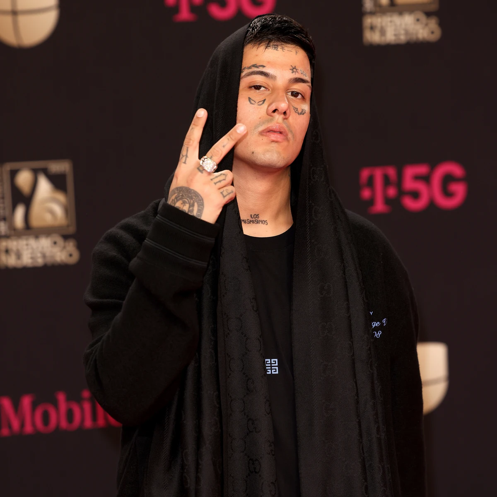

DUKI

Mauro Ezequiel Lombardo Quiroga (Almagro, Buenos Aires; 24 de junio de 1996), conocido artísticamente como Duki, es un rapero y compositor argentino.
Se le acredita el haber popularizado el género del trap a nivel nacional, siendo precursor de la explosión del trap latino en Argentina y Sudamérica. Es nombrado en varios medios como el "Líder del movimiento urbano" de su país. Lombardo surgió de sus participaciones en las batallas de freestyle, en especial de la competencia El Quinto Escalón, la cual al volverse un fenómeno viral en YouTube, le dio su primera cuota de popularidad cuando se proclamó campeón en 2016. Su victoria le permitió lanzar su primer sencillo y trabajar con el productor discográfico Omar Varela meses después.